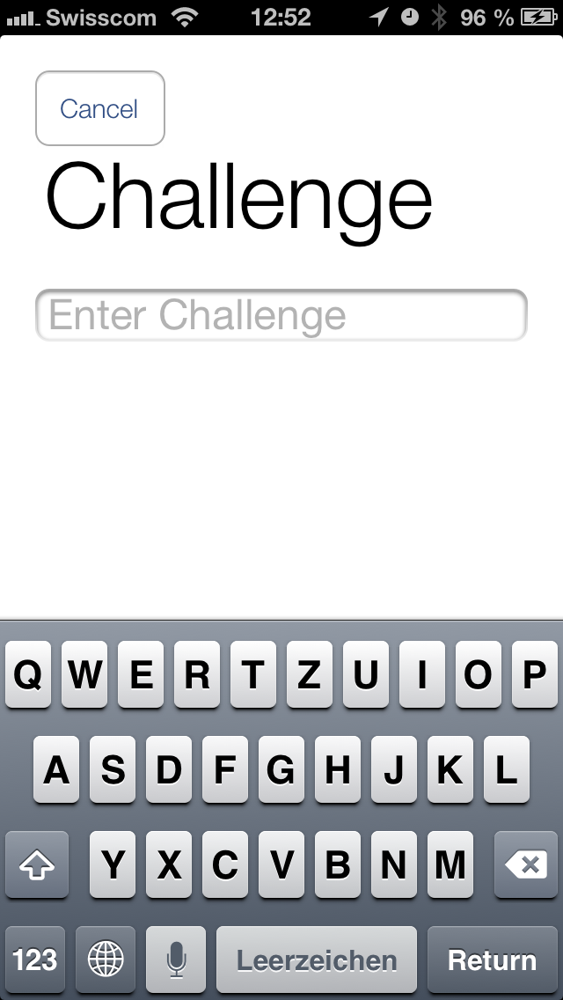

ZHAW Zürcher Hochschule für Angewandte Wissenschaften
Bachelorstudium Informatik
Seminararbeit Entwickeln von Anwendungen für Hand-Held
Dozent: Christian Vils
Herbstsemester 2012
Ausgelöst durch den aktuellen Trend hin zur mobilen Nutzung sind diverse neue
Applikationen zur Erfassung und Verwaltung von Merklisten erschienen. Nur wenige
erlauben es aber, die Listen mit anderen Personen gemeinsam zu nutzen. Oft muss
dazu auch zuerst ein Benutzerkonto mit Benutzernamen und Passwort erstellt
werden. Dieses vom Desktop-Computer übernommene Konzept funktioniert im mobilen
Kontext aufgrund der eingeschränkten Eingabemöglichkeiten und den
unterschiedlichen Endgeräten jedoch suboptimal.
Ziele der Arbeit
Entwicklung einer iPhone-App, welche es ermöglicht Listen unter mehreren
Personen zu teilen, sowie einer dazugehörender API mit einem Web-Frontend.
Informationen über Änderungen einer Liste sollen dem Benutzer zudem zeitnah über
Benachrichtigungen angezeigt werden. Der Benutzer soll ohne Benutzername
und Passwort auf einem beliebigen Gerät im Browser auf seine Listen zugreifen
können. Dazu soll ein eigenes Authentifizierungsverfahren verwendet werden.
Aufgabenstellung
Konzeption und Implementation einer iPhone-App sowie einer Web-Applikation zur
gemeinsamen Nutzung von Listen. Ausarbeitung eines eigenen
Authentifizierungsverfahren zwischen der iPhone-App und der Web-Applikation für
den geräteunabhängigen Zugriff auf die Listen.
Teaser
Der Teaser gibt einen Überblick über das Projekt und ist online zugänglich unter
teaser.lightningapp.ch. Um den
Teaser auch noch etwas speziell zu machen, wurde eine Animation eingebaut.
Die HTML-Seite des Teasers setzt sich aus einer kurzen Beschreibung des Projekts
und einer Animation der App zusammen. Die Animation der App ist ein GIF, welches
über die Abbildung eines iPhones gelegt ist, und zeigt den Start der App in 8
Einzelbildern.
Teaser im Web
Projektmanagement
Projektteam
Das Projektteam setzt sich aus Fabian Vogler und Cyril Gabathuler zusammen.
Fabian Vogler ist für die API und das Web Interface verantwortlich und Cyril
Gabathuler hat die Verantwortung für die iPhone App übernommen.
Projektplanung
Der folgende Projektplan gibt einen Überblick über den Ablauf des Projekts
und dessen wichtigsten Meilensteine.
September
Oktober
November
Dezember
Januar
Kick-Off
◆ 12.09.12
Teaser
Abgabe Teaser
◆ 28.11.12
Umsetzung
Dokumentation
Arbeitstreffen
◆ 05.12.12
Präsentation
Schlusspräsentation
◆ 09.01.13
Projektplanung
Aufwand
Laut Reglement sollte der Aufwand pro Student 75h betragen. Entsprechend wurde
die Planung darauf ausgelegt. Grosse Hindernisse waren unter anderem externe
Services, wie die Push Notification Infrastruktur von Apple.
Beschreibung
API / Web
iOS
Soll
Ist
Soll
Ist
Projekt aufsetzen
2h
4h
2h
3h
Listen erfassen
10h
4h
10h
8h
Items erfassen
8h
5h
6h
8h
Items editieren
5h
6h
10h
12h
Listen teilen
8h
12h
7h
10h
Web Interface
10h
9h
0h
0h
Authentifizierung
10h
14h
5h
3h
Push Notifications
5h
4h
10h
15h
Continuous Integration
5h
13h
3h
5h
Dokumentation
12h
12h
12h
12h
Total
75h
83h
75h
76h
Soll / Ist Vergleich Aufwand
Dokumentation
Die Dokumentation wurde rein in HTML und CSS geschrieben. Das Inhalts- und das
Abbildungsverzeichnis wurden dynamisch mit JavaScript generiert. Um die Seite
auch korrekt ausdrucken zu können, wurde die Software
Prince verwendet, welche HTML-Seiten
in PDFs umwandelt. Dadurch konnte diese Dokumentation gleich wie der Source-Code
der Applikation selbst mit der Versionverwaltungssoftware Git verwaltet und über
den Online-Service GitHub geteilt werden.
Authentifizierung
Um von jedem beliebigen Gerät auf die eigenen Listen zugreifen zu können, ist
ein Prozess notwendig, um die Verbindung mit dem Account herzustellen und den
Zugriff auf diesen zu berechtigen.
Ablauf Authentifizierung
Step 1: Jeder Account ist über eine einzigartigen Link erreichbar. Dieser Link
kann in der App angezeigt und per E-Mail versendet werden. Da dieser Link
immer gleich bleibt, kann er auch problemlos als Lesezeichen gespeichert werden.
Step 2: Beim Aufruf des Links auf einem Desktop-Browser erscheint die Login-Seite,
von welcher mit dem Klick auf einen Knopf der Authentifizierung-Prozess gestartet
werden kann.
Step 3: Nachdem im Browser die Authentifizierung-Anfrage abgeschickt wurde,
erhält das mobile Geräte eine Push-Nachricht. Die App bietet die Möglichkeit,
die Anfrage zu ignorieren oder diese anzusehen.
Step 4: Innerhalb der App muss dann der im Browser angezeigte Sicherheitscode
eingegeben und bestätigt werden.
Step 5: Nachdem die Bestätigung des Sicherheitscodes in der App erfolgt ist, erscheinen
im Browser automatisch die Listen des Accounts. Der Benutzer kann dann diese an
Sicherheitscode
Um einen ausreichenden Schutz bieten zu können und trotzdem bedienungsfreundlich
zu sein, ist ein Sicherheitscode für die Authentifizierung nötig, welcher
gewissen Anforderungen entspricht.
Die anfängliche Idee eines Tic-Tac-Toes wurde verworfen, da es zu wenig mögliche
Kombinationen gibt und zu einfach zu knacken wäre. Durch die 2 möglichen Werte
der 9 Felder ergäben sich nur 2^9 = 512 Kombinationen. Eine Erhöhung der Anzahl
der Felder auf 16 würde zwar deutlich mehr Kombinationen ergeben (2^16 = 65 536),
jedoch leidet dann die Bedienung, da das Muster deutlich komplexer wird.
Authentifizierung mit Tic-Tac-Toe
Eine sichere und trotzdem einfache Alternative, die auch oft bei der
Authentifizierung im E-Banking verwendet wird, ist eine vierstellige
Zahlenkombination. Diese kann leicht eingegeben werden, da den meisten Benutzern
Zahlenkombinationen bekannt sind, und bieten eine genügende Sicherheit mit 10^4
= 10 000 Kombinationen.
Auf dem iPhone wird folgende View dargestellt sobald der User den Link aufruft.
Der User wird aufgefordert die vierstellige Zahlenkombination einzugeben.

Challenge View auf dem iPhone
Zwei-Faktor-Authentifizierung
Eine Zwei-Faktor-Authentifizierung setzt sich typischerweise aus Elementen die
der User kennt und die ein User besitzt zusammen.
Etwas was ein User kennt: Der User ist im Besitz einer eindeutigen URL, welcher
nur er kennen sollte.
Etwas was ein User besitzt: Der User ist im Besitz der Lightning App auf seinem
iPhone, welche eine Challenge erhalten wird.
Der Zugriff auf das Web Interface ist also durch eine
Zwei-Faktor-Authentifizierung geschützt. Es besteht aber keine «Strong»-
Authentifizierung, weil die URL in der App dargestellt wird. Würde ein User sein
iPhone verlieren hätte ein Fremder ebenfalls Zugriff auf das Web Interface.
Web-Applikation
Architektur
Die Applikation befolgt die grundsätzlichen Prinzipien zweier moderner
Software-Architekturen. Zum einen die Model–View–Controller-Architektur als Basis
für den Aufbau der Software, zum anderen die REST-Architektur, welche die
Struktur der API vorgibt.
Model-View-Controller
Für die Software kommt eine an das Web angepasster Form der
Model–View–Controller-Architektur zur Anwendung, welche mithilfe des
PHP-Frameworks Symfony in der Version 2.1
umgesetzt wurde:
Paketdiagramm der Web-Applikation
Das Model setzt sich aus den gespeicherten Daten und der
Business-Logik zusammen. Es besteht aus den Klassen in den Paketen
Lightning\ApiBundle\Entity und
Lightning\ApiBundle\Service.
Die View ist für die Darstellung der Daten zuständig. Sie
entscheidet basierend auf der Anfrage des Benutzers, in welcher Form die Daten
dargestellt werden. Diese Funktion wird in der API hauptsächlich durch das
Symfony Bundle namens
FOSRestBundle
erledigt, welches die Daten des Controllers gemäss dem HTTP-Header
Accept entweder in JSON oder XML zurückgibt.
Der Controller nimmt Benutzeranfragen entgegen und ruft die
nötigen Befehle aus dem Model auf. Er gibt dann die Daten aus dem Model an die
View weiter, damit diese die Daten darstellen kann. Die dafür zuständigen Klassen
befinden sich im Paket Lightning\ApiBundle\Controller.
Gespeichert werden die Daten in einer MySQL-Datenbank, der Zugriff erfolgt über
die Hilfsklassen von Symfony.
Entwicklung
Um ein einfaches Deployment zu ermöglichen und ein Auslieferung von fehlerhaftem
Source-Code zu verhindern, wurde eine ganze Kette von automatischen Prozessen und
Tools eingerichtet, die bei der Entwicklung immer wieder durchlaufen werden:
Übersicht Ablauf Entwicklung
Lokale Entwicklung
Entwickelt wird die Applikation lokal auf dem Computer des Entwicklers.
Die Installationstionsvoraussetzungen sind minimal und werden mit den meisten
modernen, unixähnlichen Betriebssystemen (wie z.B. Mac OS X) mitgeliefert.
Konkret wird nur der MySQL Community Server und PHP ab Version 5.3 vorausgesetzt
- auf Windows kann dieses auch
einfach manuell installiert werden. Sämtliche restlichen Abhängigkeiten können
mit dem PHP Dependency Manager namens Composer installiert werden.
Die Verwaltung
des Source Codes erfolgt über die Versionverwaltungs-Software Git und damit der
Source Code auch allen zugänglich ist, wird zudem der kostenlose Dienst GitHub
eingesetzt.
Um das Projekt auf einem Computer komplett zu installieren, genügen folgende
Befehle:
Mit diesen Befehlen wird der Source Code heruntergeladen, die Abhängigkeiten
installiert, die benötigten Datenbanken erstellt und der Entwicklungsserver
gestartet. Danach ist die Applikation unter http://localhost:8000/ benutzbar.
GitHub
Der zentrale Server der Versionsverwaltung ermöglicht Reviews von Änderungen
und löst per Webhook die Ausführung der Unit-Tests auf Travis-CI sowie die
Überprüfung der Coding-Guidelines aus. Der Source-Code der Web-Applikation findet
sich als Open-Source-Projekt öffentlich ersichtlich unter
github.com/fabian/lightning-web.
Automated Code Reviews
Der kostenlose Dienst
Automated Code Reviews for
PHP überprüft für Open-Source-Projekte, welche auf GitHub
gehostet sind, die Einhaltung von Konventionen und sucht automatisch nach
typischen Programmierfehlern im Code, indem es den Code statisch analysiert.
Werden Fehler gefunden, erhält der Entwickler ein E-Mail mit den gefundenen
Fehlern. Zudem erstellt der Dienst selbständig Pull Requests mit
Korrekturvorschlägen.
Travis CI
Ebenfalls kostenlos für Open-Source-Projekte ist der
Continious-Integration-Service Travis CI.
Bei jedem Commit wird
auf dem Travis-Server eine virtuelle Maschine gestartet und das Projekt
installiert. Dann werden die Unit Tests mit
PHPUnit ausgeführt
und die Coding-Guidelines mit
PHPCS überprüft.
Nur wenn beide Prüfungen erfolgreich waren, wird
der Zustand der Web-Applikation als stabil erachtet und das Deployment
angestossen. Ansonsten erhält der Entwickler wiederum ein E-Mail mit einem
Hinweis auf den Fehler.
Die Code Coverage von Unit Tests ist immer mit Vorsicht zu geniessen ist, da keine
Aussage über die Wichtigkeit der getesteten Teile gemacht werden kann. Dennoch
konnte in den meisten Paketen eine Abdeckung von über 90% erreicht werden.
Code Coverage der Unit Tests
Padoga Box
Padoga Box bietet einen skalierbaren
Webserver für PHP-Applikationen (Cloud-Hosting). Eine einzelne Server-Instanz
kann kostenlos betrieben werden, steigt die Benutzeranzahl, kann einfach gegen
eine Gebühr die Anzahl der Server erhöht werden.
Das Deployment bei Pagoda Box erfolgt ebenfalls mit Git. Es gäbe die Möglichkeit,
einen Private Key mit Deployment-Rechten auf dem Travis-Server zu hinterlegen,
wodurch nach den erfolgreichen Tests direkt von dort deployed werden könnte. Dies
hätte aber zum Nachteil, dass der Private Key öffentlich wäre und jede Person
beliebigen Code auf den Server deployen könnte. Es wurde deshalb eine separate
Deployment-Applikation mit PHP geschrieben und auf einem separaten Server
installiert. Die Deployment-Applikation wird von Travis aufgerufen und überprüft
dessen Signatur anhand eines geheimen Tokens und führt dann das Deployment durch.
iPhone App
Architektur
Die iPhone App wurde nativ mit Objective-C umgesetzt. iOS 6 wird vorausgesetzt was den Vorteil
von neuen und aktuellen API's mit sich bringt.
Model-View-Controller
Die App wurde nach dem Model-View-Controller Pattern umgesetzt. Dabei wurden die meisten GUI's
manuell und programmatisch erstellt, teilweise jedoch auch mit Hilfe des Interface Builders.
Persistenz
ERM
Für die Persistenz der Daten wurde CoreData eingesetzt. CoreData ist eine Objektrelationale Datenbank,
welche ein SQL Lite File zur Speicherung der Daten benutzt. Verschiedene API's stehen zur Verfügung um
die Daten zu mutieren.
Dependecy Management
CocoaPods wurde eingesetzt um ein Dependecy Management für die App Entwicklung einzusetzen.
In einem File names PodFile werden die verschiedenen Abhängigkeiten (pod) definiert. Es kann
auch die Version von iOS definiert werden.
platform :ios, '6.0'
pod 'AFNetworking', '~> 1.1.0'
Nach dem das PodFile definiert ist können mit Hilfe des Befehls
pod install
die verschiedenen Abhängigkeiten installiert bzw. mit
pod update
ein Update der Abhängigkeiten angestossen werden.
AFNetworking
Zur Kommunikation mit dem Server wurde das AFNetworking Framework in der Version 1.1.0 eingesetzt.
AFNetworking hat sich in der Community beliebt gemacht, weil es sehr klein und nahe an der API
von Apple ist. Das Framework wurde stark auf REST Webservices ausgelegt und bietet die
entsprechenden Funktionalitäten von Haus aus an.
In-App Kauf
Gewisse Funktionalität in der App wird nur durch den Kauf eines Jahres-Abo von CHF 1.00 freigeschaltet.
Dies umfasst das Teilen von Listen, die Speicherung der Daten in der «Cloud» und die Benutzung des
Web Interfaces.
Apple bietet die Möglichkeit an, innerhalb von einer App einen sogenannten In-App Kauf zu tätigen.
Es gibt drei verschiedene Typen von Produkten:
Konsumierbare Produkte, welche der User jedes Mal kaufen muss falls er dieses
Produkt braucht.
Nicht konsumierbare Produkte, kauft der User ein einziges Mal.
Entsprechend werden durch StoreKit(API von Apple) Möglichkeiten zur Wiederherstellung angeboten.
Automatische verlängernde Abos werden nur für die App Newstand und darin
enthaltene Magazine angeboten.
Wie bereits erwähnt lassen sich automatisch verlängernde Abos nur für gewissen Typen von App's einsetzen.
Daher wurde mit Hilfe von konsumierbaren Produkten versucht ein Abo zu imitieren. Ab Kaufdatum kann der
User 1 Jahr mit dem Server kommunizieren. Entsprechend wird er vor Ablauf des Jahres zur Verlängerung des
Abo's aufgefordert.
Prinzipiell ist der Ablauf eines Kaufes wie folgt: Die App fragt bei einem Apple Server anhand einer speziellen
ID nach den Produktinformationen. Diese werden aufbereitet dem User dargestellt, siehe
In-App Button für den Kauf. Entscheidend
sich der User ein Abo zu kaufen wird dies dem Apple Server mitgeteilt und der Account des Users wird belastet.
Der App wird einen sogenannten «Kassenzettel» zur Validierung des Kaufes zu Verfügung gestellt.
Dieser Kassenzettel wird an die Server von lightningapp.ch übermittelt, welche wiederum mit einem Apple Server kommuniziert.
Durch diesen Ansatz kann eine Man-in-the-middle Attacke abgewehrt werden.
Ablauf eines In-App Kaufes (Bild von Apple)In-App Button für den Kauf
Push Notifications
Die App wurde darauf ausgelegt Push Notifications zu erhalten. Diese werden verschickt, sobald eine
Änderung an einer geteilten Liste erkannt worden ist. Folgendermassen würde beispielhaft eine
Nachricht aussehen.
Push Notification
Entwicklung
Workflow iPhone App
GitHub
Der Source-Code wird auf GitHub in einem privaten Repository gehalten. Zugang haben nur die Entwickler. Über einen Webhook wird der Build Prozess
für den Jenkins angestossen (Schritt 1).
Jenkins CI
Jenkins wird verwendet um die App kontinuierlich zu builden. Es wurde ein Job definiert, welcher der Build
Prozess anstösst sobald ein Änderung auf GitHub gepusht worden ist. Das Ergebnis eines Builds ist ein sogenanntes
IPA File (Schritt 2). Dieses enthält die App an sich. Dieses File wird direkt auf TestFlight hochgeladen (Schritt 3).
TestFlight
TestFlight bietet die Möglichkeit die App einfach an verschiedene Tester zu verteilen und Feedback einzusammeln (Schritt 4).
Tester müssen sich über ein Link registrieren und erhalten danach die Möglichkeit die App zu installieren. In der App
haben die Tester die Möglichkeit Feedback an die Entwickler zu senden.
Feedback Button für die Entwickler
Crashlytics
Um Abstürze während der Testphase zu dokumentieren wurde das Framework Crashlytics eingesetzt. Sollte die App
abstürzen wird ein Logfile erstellt, welches in einem Web Interface von Crashlytics dargestellt wird.
Dies vereinfacht die Suche nach Fehler in der Applikation und der Einfluss auf die User kann gemessen werden.
Schlusswort
App in Benutzung
Das Projekt hat gezeigt, dass bei der modernen Applikationsentwicklung unzählige
Komponenten mitspielen: Konzepte wie REST oder Zwei-Faktor-Authentifizierung
müssen verstanden werden, Tools wie Continious-Integration-Server müssen
aufgesetzt und gewartet werden - und neue Technologien müssen erlernt und optimal
eingesetzt werden können. Der Trend zur mobilen Nutzung hat die Programmierung
nicht einfacher gemacht, sondern um weitere Komponenten erweitert.
Das Zusammenspiel mit externen Anbietern war teilweise sehr nervenaufreibend und zeitaufwendig.
Entsprechend froh ist man wenn alle Puzzleteile letztendlich zusammenpassen und man
eine lauffähige App vor sich in den Händen hält.
Die Herausforderung eine App zu entwickeln, welche mit einem Server im Internet
kommuniziert konnte gemeistert werden. Neue Technologien und Services konnten integriert werden,
um eine «State of the Art»-App zu entwickeln.
Anhang
Glossar
API: Application Programming Interface, bezeichnet die Schnittstelle, über
welche der Client Daten vom Server abruft.
Client: Ein Anwendungsprogramm, welches auf dem Gerät des Benutzers läuft und
meist mit einem Server kommuniziert.
REST: Representational State Transfer, ist eine Architektur für eine API, welche
die nach HTTP definierten Regeln befolgt.
Bundle: Zusammenfassung mehrerer Klassen und Konfigurationsdateien innerhalb
eines Symfony-PHP-Projekts.
HTTP: Hypertext Transfer Protocol, ist ein Protokoll zur Übertragung von Daten
über ein Netzwerk.
HTTP-Header: Feld einer HTTP-Übertragung, welches zusammen mit den Daten im HTTP-
Protokoll übertragen wird.
JSON: JavaScript Object Notation, ist ein kompaktes, lesbares Datenformat,
welches oft im Internet verwendet wird.
XML: Extensible Markup Language, ist ebenfalls ein Datenformat, welches oft
im Internet Verwendung findet, jedoch mächtiger ist als JSON.
Desktop: Computer, welche von einem Benutzer bedient meist an einem Schreibtisch
bedient wird.
Browser: Software zur Darstellung von Websiten aus dem Internet. Beispielsweise
Google Chrome oder Mozilla Firefox.
Webhook: Eine Internet-Adresse, welche bei einem bestimmten Ereignis aufgerufen
wird, damit weitere Aktionen ausgeführt werden können.
URL: Uniform Resource Locator, eine Internet-Adresse welche auf eine Ressource
wie z.B. eine Website zeigt.
Pull Request: Aufforderung bei GitHub, Änderungen am Source-Code eines Projekts
in das Programm aufzunehmen.
Continious Integration: Automatisches und regelmässiges ausführen von Tests
und/oder Deployments.
Private Key: Geheimer Schlüssel, welcher für eine asymmetrische Verschlüsselung
verwendet wird.
Deployment: Installation und Konfiguration einer Anwendung auf einem Server oder
einem Endgerät.
Man-in-the-middle: Angriff auf die Kommunikation zwischen zwei Punkten, bei
welcher Daten abgehört und/oder modifiziert werden.
Code Coverage: Beschreibt, wie viel Prozent des Source-Codes durch Unit Tests
abgedeckt werden.
Interface Builder: Ein Tool, welches das Erstellen von GUI's mit Hilfe eines
Baukastensystems vereinfacht.